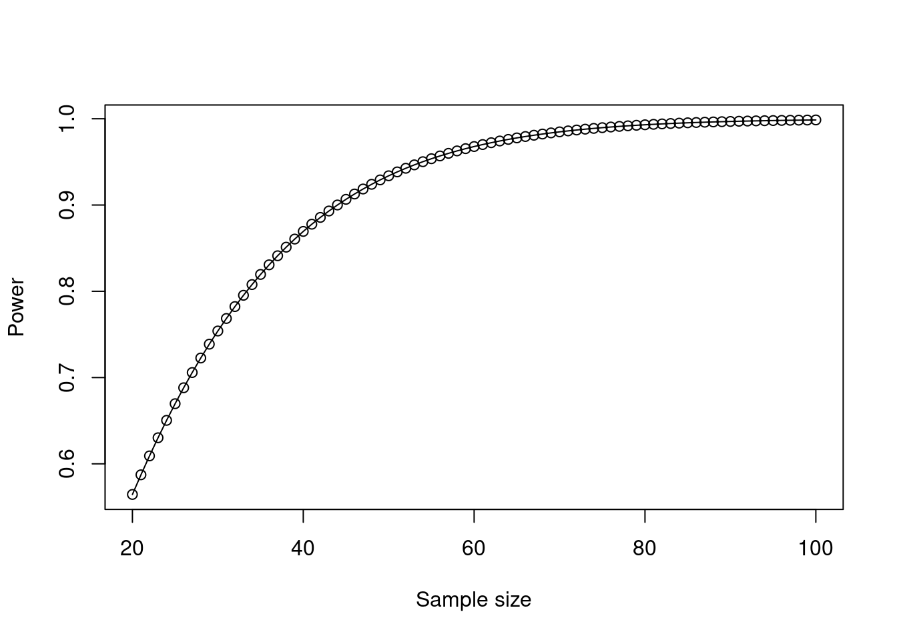
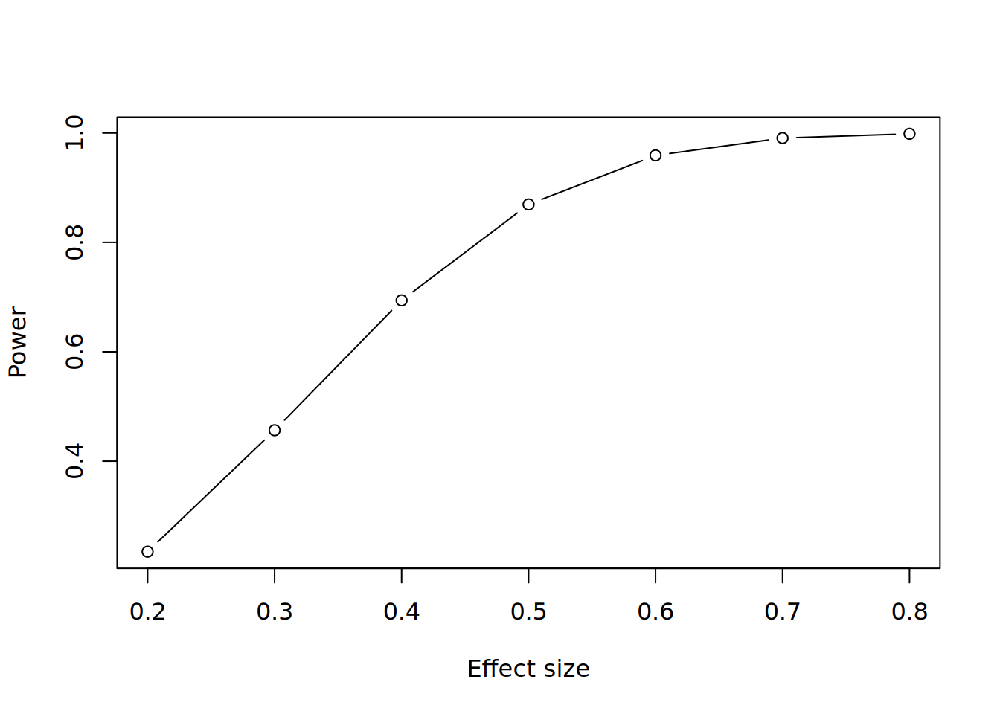
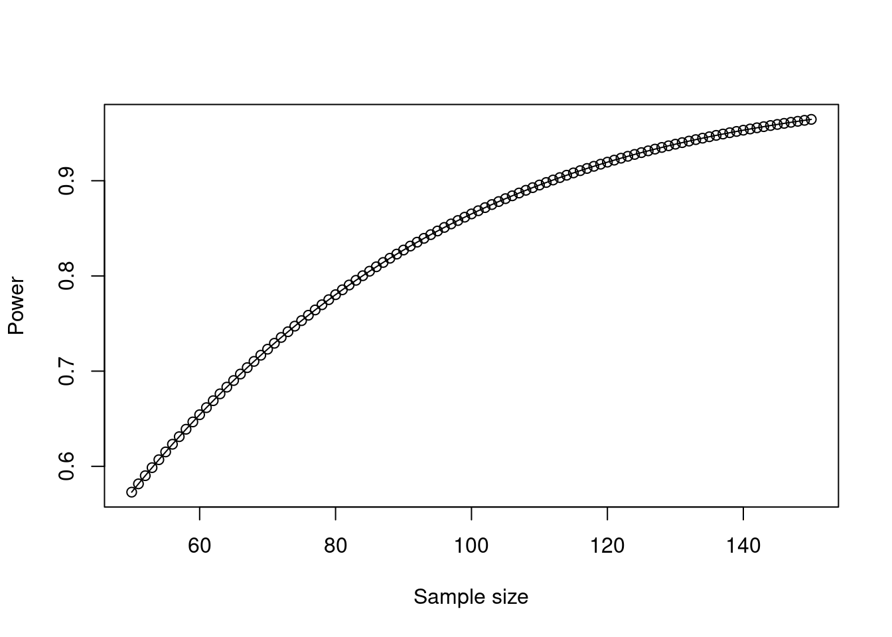
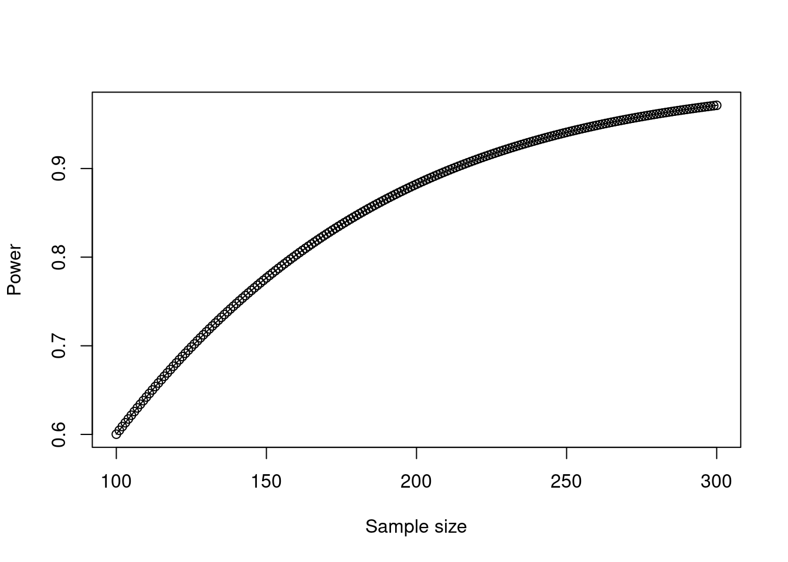
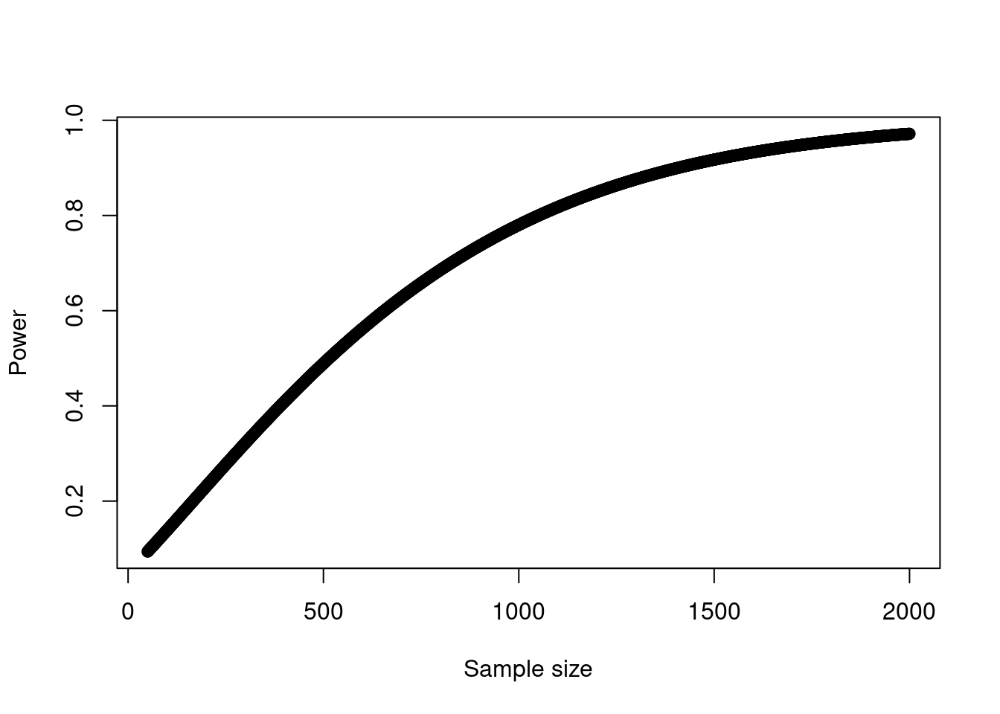
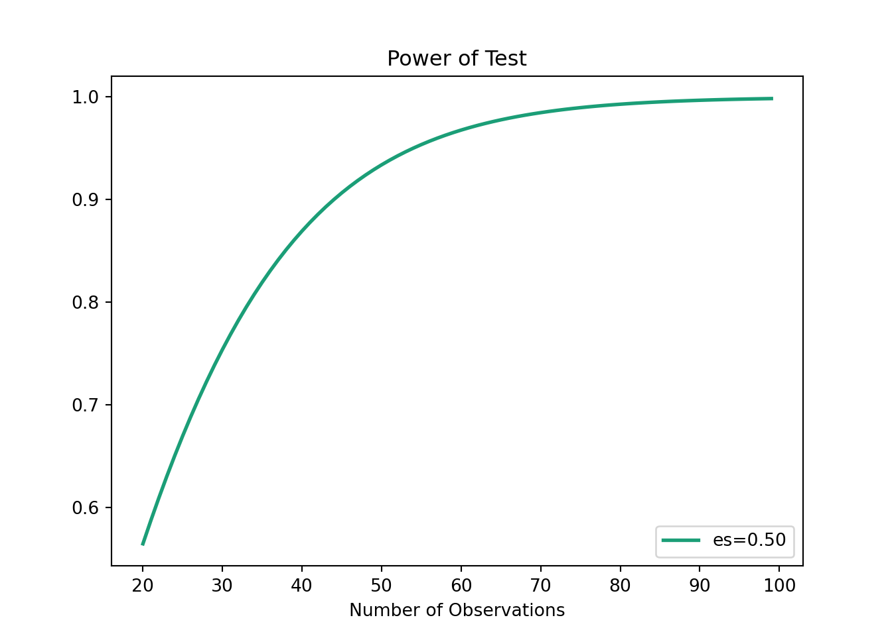

library(WebPower)
# get minimum n for power of 0.8
(n_test <- WebPower::wp.t(d = 0.5, p = 0.8, type = "paired"))Paired t-test
n d alpha power
33.36713 0.5 0.05 0.8
NOTE: n is number of *pairs*
URL: http://psychstat.org/ttestIn the vast majority of situations in People Analytics, researchers and analysts have limited control over the size of their samples. The most common situation is, of course, that analyses are run with whatever data can be gleaned and cleaned in the time available. At the same time, as we have seen in all of our previous work, even if a certain difference might exist in real life in the populations being studied, it is by no means certain that a specific analysis on samples from these populations will elucidate that difference. Whether that difference is visible depends on the statistical properties of the samples used. Therefore, researchers and analysts are living in the reality that when they conduct inferential analysis, the usefulness of their work depends to a very large degree on the samples they have available.
This suggests that a conscientious analyst using classical statistical methods would be well advised to do some up-front work to determine if their samples have a chance of yielding results that are of some inferential value. In a practical context, however, this is only partly true. Estimating required sample sizes is an imprecise science. Although the mathematical theory suggests that it should be precise, in reality we are guessing most of the inputs to the mathematics. In many cases we are so clueless about those inputs that we move into the realms of pure speculation and then produce ranges of required sample sizes that are so wide as to be fairly meaningless in practice.
That said, there are situations where conducting power analysis—that is, analysis of the required statistical properties of samples in order to have a certain minimum probability of observing a true difference—makes sense. Power analysis is an important element of experimental design. Experiments in people analytics usually take one of two forms:
Prospective experiments involve running some sort of test or pilot on populations to determine if a certain measure has a hypothesized effect. For example, introducing a certain new employee benefit for a specific subset of the company for a limited period of time, and determining if there was a difference in the impact on employee satisfaction compared to those who did not receive the benefit.
Retrospective experiments involve the use of historical data to test if a certain measure has a hypothesized effect. This usually occurs opportunistically when it is apparent that a certain measure has occurred in the past and for a limited time, and data can be drawn to test whether or not that measure resulted in the hypothesized effect.
Both prospective and retrospective experiments can involve a lot of work—either in setting up experiments or in extracting data from history. There is a natural question as to whether the chances of success justify the required resources and effort. Before proceeding in these cases, it is sensible to get a point of view on the likely power of the experiment and what level of sample size might be needed in order to establish a meaningful inference. For this reason, power analysis is a common component of research proposals in the medical or social sciences.
Power analysis is a relatively blunt instrument whose primary value is to make sure that substantial effort is not being wasted on foolhardy research. If the analyst already has reasonably available data and wants to test for the effect of a certain phenomenon, the most direct approach is to just go and run the appropriate model assuming that it is relatively straightforward to do so. Power analysis should only be considered if there is clearly some substantial labor involved in the proposed modeling work.
Before looking at practical ways to conduct power tests on proposed experiments, let’s review an example of the logical and mathematical principles behind power testing, so that we understand what the results of power tests mean. Recall from Section 3.3 the logical mechanisms for testing hypotheses of statistical difference. Given data on samples of two groups in a population, the null hypothesis \(H_0\) is the hypothesis that a difference does not exist between the groups in the overall population. If the null hypothesis is rejected, we entertain the alternative hypothesis \(H_1\) that a difference may exist between the groups in the population.
Recall also that we use the statistical properties of the samples to make inferences about the null hypothesis based on statistical likelihood. This means that four possible situations can occur when we run hypothesis tests:
Statistical power refers to the fourth situation and is the probability that \(H_0\) is rejected given that \(H_1\) is true. Statistical power depends at a minimum on three criteria:
As an example to illustrate the mathematical relationship between these criteria, let’s assume that we run an experiment on a group of employees of size \(n\) where we introduce a new benefit and then test their satisfaction levels before and after its introduction. As a statistic of a random variable, we can expect the mean difference in satisfaction to have a normal distribution. Let \(\mu_0\) be the mean of the population under the null hypothesis and let \(\mu_1\) be the mean of the population under the alternative hypothesis. Now let’s assume that in our sample we observe a mean satisfaction of \(\mu^*\) after the experiment. Recall from Chapter 3 that to meet a statistical significance standard of \(\alpha\), we will need \(\mu^*\) to be greater than a certain multiple of the standard error \(\frac{\sigma}{\sqrt{n}}\) above \(\mu_0\) based on the normal distribution. Let’s call that multiple \(z_{\alpha}\). Therefore, we can say that the statistical power of our hypothesis test is:
\[ \begin{aligned} \mathrm{Power} &= P(\mu^* > \mu_0 + z_{\alpha}\frac{\sigma}{\sqrt{n}}\vert{\mu = \mu_1}) \\ &= P(\frac{\mu^* - \mu_1}{\frac{\sigma}{\sqrt{n}}} > -\frac{\mu_1 - \mu_0}{\frac{\sigma}{\sqrt{n}}} + z_{\alpha}\vert{\mu = \mu_1}) \\ &= 1 - \Phi(-\frac{\mu_1 - \mu_0}{\frac{\sigma}{\sqrt{n}}} + z_{\alpha}) \\ &= 1 - \Phi(-\frac{\mu_1 - \mu_0}{\sigma}\sqrt{n} + z_{\alpha}) \\ &= 1 - \Phi(-d\sqrt{n} + z_{\alpha}) \end{aligned} \]
where \(\Phi\) is the cumulative normal probability distribution function, and \(d = \frac{\mu_1 - \mu_0}{\sigma}\) is known as Cohen’s effect size. Therefore, we can see that power depends on a measure of the observed effect size \(d\) between our two samples, the significance level \(\alpha\) and the sample size \(n\)1.
The reader may immediately observe that many of these measures are not known at the typical point at which we would wish to do a power analysis. We can assert a minimum level of statistical power that we would wish for—usually this is somewhere between 0.8 and 0.9. We can also assert our \(\alpha\). But at a point of experimental design, we usually do not know the sample size and we do not know what difference would be observed in that sample (the effect size). This implies that we are dealing with a single equation with more than one unknown, and this means that there is no unique solution2. Practically speaking, looking at ranges of values will be common in power analysis.
Usually we will run power analyses to get a sense of required sample sizes. Given the observations on unknowns in the previous section, we will have to assert certain possible statistical results in order to estimate required sample sizes. Most often, we will need to suggest the observed effect size in order to obtain the minimum sample size for that effect size to return a statistically significant result at a desired level of statistical power.
Using our example from the previous section, let’s assume that we would see a ‘medium’ effect size on our samples. Cohen’s Rule of Thumb for \(d\) states that \(d = 0.2\) is a small effect size, \(d = 0.5\) a medium effect size and \(d = 0.8\) a large effect size. We can use the wp.t() function from the WebPower package in R to do a power analysis on a paired two-sample \(t\)-test and return a minimum required sample size. We can assume \(d = 0.5\) and that we require a power of 0.8—that is, we want an 80% probability that the test will return an accurate rejection of the null hypothesis.
library(WebPower)
# get minimum n for power of 0.8
(n_test <- WebPower::wp.t(d = 0.5, p = 0.8, type = "paired"))Paired t-test
n d alpha power
33.36713 0.5 0.05 0.8
NOTE: n is number of *pairs*
URL: http://psychstat.org/ttestThis tells us that we need an absolute minimum of 34 individuals in our sample for an effect size of 0.5 to return a significant difference at an alpha of 0.05 with 80% probability. Alternatively we can test the power of a specific proposed sample size.
# get power for n of 40
(p_test <- WebPower::wp.t(n1 = 40, d = 0.5, type = "paired"))Paired t-test
n d alpha power
40 0.5 0.05 0.8693981
NOTE: n is number of *pairs*
URL: http://psychstat.org/ttestThis tells us that a minimum sample size of 40 would result in a power of 0.87. A similar process can be used to plot the dependence between power and sample size under various conditions as in Figure 11.1. This is known as a power curve.
# test a range of sample sizes
sample_sizes <- 20:100
power <- WebPower::wp.t(n1 = sample_sizes, d = 0.5, type = "paired")
plot(power)
We can see a ‘sweet spot’ of approximately 40–60 minimum required participants, and a diminishing return on statistical power over and above this. Similarly we can plot a proposed minimum sample size against a range of effect sizes as in Figure 11.2.
# test a range of effect sizes
effect_sizes <- 2:8/10
samples <- WebPower::wp.t(n1 = rep(40, 7),
d = effect_sizes,
type = "paired")
plot(samples$d, samples$power, type = "b",
xlab = "Effect size", ylab = "Power")
Similar power test variants exist for other common simple hypothesis tests. Let’s assume that we want to institute a screening test in a recruiting process, and we want to validate this test by running it on a random set of employees with the aim of proving that the test score has a significant non-zero correlation with job performance. If we assume that we will see a moderate correlation of \(r = 0.3\) in our sample3, we can use the wp.correlation() function in WebPower to do a power analysis, resulting in Figure 11.3.
sample_sizes <- 50:150
correl_powers <- WebPower::wp.correlation(n = sample_sizes, r = 0.3)
plot(correl_powers)
Figure 11.3 informs us that we will likely want to be hitting at least 100 employees in our study to have any reasonable chance of establishing possible validity for our screening test.
In power tests of linear regression models, the effect size is a statistic of the difference in model fit between the two models being compared. Most commonly this will be a comparison of a ‘full’ fitted model involving specific input variables compared to a ‘reduced’ model with fewer input variables (often a random variance model with no input variables).
The \(f^2\) statistic is defined as follows:
\[
f^2 = \frac{R_{\mathrm{full}}^2 - R_{\mathrm{reduced}}^2}{1 - R_{\mathrm{full}}^2}
\] where the formula refers to the \(R^2\) fit statistics for the two models being compared. As an example, imagine we already know that GPA in college has a significant relationship with job performance, and we wish to determine if our proposed screening test had incremental validity on top of knowing college GPA. We might run two linear regression models, one relating job performance to GPA, and another relating job performance to both GPA and screening test score. Assuming we would observe a relatively small effect size for our screening test, we assume \(f^2 = 0.05\)4, we can plot sample size against power in determining whether the two models are significantly different. We will also need to define the number of predictors in the full model (p1 = 2) and the reduced model (p2 = 1). The plot is shown in Figure 11.4.
sample_sizes <- 100:300
f_sq_power <- WebPower::wp.regression(n = sample_sizes,
p1 = 2, p2 = 1, f2 = 0.05)
plot(f_sq_power)
In Chapter 5, we reviewed how measures of fit for log-likelihood models are still the subject of some debate. Given this, it is unsurprising that measures of effect size for log-likelihood models are not well established. The most well-developed current method appeared in Demidenko (2007), and works when we want to do a power test on a single input variable \(x\) using the Wald test on the significance of model coefficients (see Section 7.3.2 for a reminder of the Wald test).
In this method, the statistical power of a significance test on the input variable \(x\) is determined using multiple inputs as follows:
p0 in the code below).p1 in the code below).family below) and the parameters of that distribution are also entered (parameter below). For example, if the distribution is assumed to be normal then the mean and standard deviation would be entered as parameters.For example, let’s assume that we wanted to determine if our new screening test had a significant effect on promotion likelihood by running an experiment on employees who were being considered for promotion. We assume that our screening test is scored on a percentile scale and has a mean of 53 and a standard deviation of 21. We know that approximately 50% of those being considered for promotion will be promoted, and we believe that the screening test may have a small effect whereby those who score zero would still have a 40% chance of promotion and every additional point scored would increase this chance by 0.2 percentage points. We run the wp.logistic() function in WebPower to plot a power curve for various sample sizes as in Figure 11.5.
sample_sizes <- 50:2000
logistic_power <- WebPower::wp.logistic(n = sample_sizes,
p0 = 0.4, p1 = 0.402,
family = "normal",
parameter = c(53, 21))
plot(logistic_power)
This test suggests that we would need over 1000 individuals in our experiment in order to have at least an 80% chance of establishing the statistical significance of a true relationship between screening test score and promotion likelihood.
Power tests for explicit hierarchical models usually originate from the context of the design of clinical trials, which not only concern themselves with the entire sample size of a study but also need to determine the split of that sample between treatment and control. It is rare that power analysis would need to be conducted for hierarchical models in people analytics but the technology is available in the WebPower package to explore this.
Cluster randomized trials are trials where it is not possible to allocate individuals randomly to treatment or control groups and where entire clusters have been allocated at random instead. This creates substantial additional complexity in understanding statistical power and required sample sizes. The wp.crt2arm() function in WebPower supports power analysis on 2-arm trials (treatment and control), and the wp.crt3arm() function supports power analysis on 3-arm trials (Two different treatments and a control).
Multisite randomized trials are trials where individuals are assigned to treatment or control groups at random, but where these individuals also belong to different clusters which are important in modeling—for example, they may be members of clinical groups based on pre-existing conditions, or they may be being treated in different hospitals or outpatient facilities. Again, this makes for a substantially more complex calculation of statistical power. The wp.mrt2arm() and wp.mrt3arm() functions offer support for this.
Power tests are also available for structural equation models. This involves comparing a more ‘complete’ structural model to a ‘subset’ model where some of the coefficients from the more ‘complete’ model are set to zero. Such power tests can be valuable when structural models have been applied previously on responses to survey instruments and there is an intention to test alternative models in the future. They can provide information on required future survey participation and response rates in order to establish whether the improved fit can be established for the alternative models.
There are two approaches to power tests for structural equation models, using a chi square test and a root mean squared error (RMSEA) approach. Both of these methods take a substantial number of input parameters, consistent with the complexity of structural equation model parameters and the various alternatives for measuring fit of these models. The chi square test approach is implemented by the wp.sem.chisq() function, and the RMSEA approach is implemented by the wp.sem.rmsea() function in WebPower.
A limited set of resources for doing power analysis is available in the stats.power module of the statsmodels package. As an example, here is how we would conduct the power analysis for a paired \(t\)-test as in Section 11.2 above.
import math
from statsmodels.stats.power import TTestPower
power = TTestPower()
n_test = power.solve_power(effect_size = 0.5,
power = 0.8,
alpha = 0.05)
print(math.ceil(n_test))34And a power curve can be constructed as in Figure 11.6.
import matplotlib.pyplot as plt
import numpy as np
TTestPower().plot_power(dep_var = 'nobs',
nobs = np.arange(20, 100),
effect_size = np.array([0.5]),
alpha = 0.05)
plt.show()
We will also need to know the expected distribution of the statistics that we are analyzing in order to determine the power probability.↩︎
In reality there are more unknowns than the mathematics would imply, due to the imperfection of what we are trying to measure—for example, measurement error and reliability will often be an unmeasurable unknown. For this reason you will often need a larger sample size than that indicated by power tests.↩︎
Cohen’s rule of thumb for correlation coefficients is Weak: 0.1, Moderate: 0.3 and Strong: 0.5.↩︎
Cohen’s rule of thumb for \(f^2\) effect sizes is Small: 0.02, Medium: 0.15, Large: 0.35.↩︎